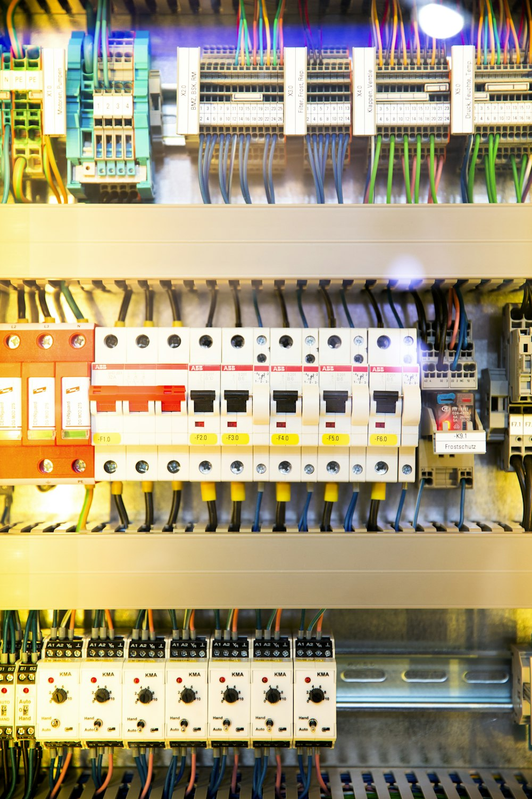

Dirección de Educación Técnico Profesional • Modalidad ETP
Escuela de Educación Secundaria Técnica
Especialidad: Electromecánica // Electricidad // Energías Renovables
Dimensionamiento y Caída de Tensión
Criterios de Cálculo Analítico, Regla de Selección Dual y Verificación Reglamentaria según AEA 90364 e IRAM NM 247-3 / 2178

| Espacio Curricular Instalaciones Eléctricas / Electrotecnia Aplicada | Curso y División ...... Año Div: ............ |
| Estudiante ....................................................................................... | Ciclo Lectivo 202... |
| Docente a Cargo ....................................................................................... | Calificación / Dictamen .................................... |
1. Origen Físico y Consecuencias Técnicas
En toda instalación eléctrica diseñada bajo la reglamentación AEA 90364 (Asociación Electrotécnica Argentina), los conductores reales presentan resistencia óhmica. Al circular una corriente de carga $I$, se produce inevitablemente una pérdida de potencial entre el tablero de origen y los bornes de la máquina o luminaria.
¿Por qué es peligroso un exceso de caída de tensión?
- Pérdida de cupla en motores: El torque de arranque disminuye con el cuadrado de la tensión ($C \propto U^2$). Una caída del 10% reduce la cupla en un 20%, pudiendo trabar la máquina e incendiar el bobinado.
- Caída del flujo lumínico: Provoca parpadeos intolerables (*flicker*) y reduce la vida útil de los balastos y drivers electrónicos.
- Disparo y vibración de contactores: Las bobinas de mando se abren intempestivamente si $U < 0.85 \cdot U_n$.
- Desperdicio energético: El cable disipa calor inútilmente por efecto Joule ($P = I^2 \cdot R$), encareciendo la factura eléctrica.
2. Ley de Pouillet y el Efecto de la Temperatura
La resistencia $R$ de un conductor homogéneo responde a la Ley de Pouillet:
Variación Térmica de la Resistividad: La resistividad eléctrica aumenta linealmente con la temperatura según $\rho_T = \rho_{20} \cdot [1 + \alpha_{20} \cdot (T - 20^\circ\text{C})]$.
- Cobre a 20°C: $\rho_{20} = 0.0178 \ \Omega\cdot\text{mm}^2/\text{m}$ (valor sólo para ensayos de laboratorio en frío).
- Cobre a 70°C (Servicio Continuo con aislación PVC): $\rho_{70} \approx \mathbf{0.021} \ \mathbf{\Omega\cdot mm^2/m}$. (Este es el valor obligatorio para dimensionar según AEA 90364).
- Cobre a 90°C (Aislación XLPE/EPR): $\rho_{90} \approx \mathbf{0.023} \ \mathbf{\Omega\cdot mm^2/m}$.
- Aluminio a 70°C: $\rho_{70} \approx \mathbf{0.034} \ \mathbf{\Omega\cdot mm^2/m}$.
3. Fórmulas de Cálculo para Circuitos Monofásicos (220 V)
En circuitos monofásicos a dos hilos (Fase y Neutro), la corriente recorre el conductor de ida y el de retorno, por lo que la distancia total es $2 \cdot L$:
4. Fórmulas para Circuitos Trifásicos Equilibrados (380 V)
En sistemas trifásicos tetrapolares equilibrados, la suma de corrientes por el neutro es nula ($I_N = 0$). La caída de tensión entre fases resulta:
5. Límites Reglamentarios según AEA 90364
| Sector / Tipo de Circuito | ΔU% Máx. Admisible | ΔU en 220 V | ΔU en 380 V |
|---|---|---|---|
| Línea Principal (Medidor a Tablero Principal) | 1.0% | 2.20 V | 3.80 V |
| Circuitos de Iluminación | 3.0% | 6.60 V | 11.40 V |
| Fuerza Motriz / Tomas de Uso General | 5.0% | 11.00 V | 19.00 V |
| Transitorio de Arranque de Motores | 10% a 15% | 22.0 - 33.0 V | 38.0 - 57.0 V |
1) Criterio Térmico: $I_b \le I_n \le I_z$ (la corriente no debe recalentar el aislante).
2) Criterio de Caída: $\Delta U\% \le \Delta U\%_{adm}$ (la caída no debe superar el 3% o 5%).
Se adopta SIEMPRE la mayor de ambas secciones.
6. Ejemplos Prácticos Resueltos
Se alimenta una torre de reflectores LED de $1200\text{ W}$, $220\text{ V}$, $\cos\varphi = 0.95$, situada a $50\text{ metros}$ del tablero. Conductor de cobre en cañería ($\rho = 0.021$). Límite de iluminación: $3\%$.
$$I_b = \frac{1200\text{ W}}{220\text{ V} \cdot 0.95} = \frac{1200}{209} = 5.74\text{ A}$$
$$\Delta U_{adm} = 220\text{ V} \cdot 0.03 = 6.60\text{ V}$$
$$S_{mín} = \frac{2 \cdot 0.021 \cdot 50\text{ m} \cdot 5.74\text{ A}}{6.60\text{ V}} = \frac{12.054}{6.60} = \mathbf{1.82\text{ mm}^2}$$
Como $1.82\text{ mm}^2 > 1.5\text{ mm}^2$, la sección comercial normalizada inmediata superior es
**$2.5\text{ mm}^2$**.
Caída real: $\Delta U = \frac{2 \cdot 0.021 \cdot 50 \cdot 5.74}{2.5} = 4.82\text{ V} \implies
\Delta U\% = \frac{4.82}{220} \cdot 100\% = \mathbf{2.19\%} \le 3\% \ (\checkmark \text{CUMPLE})$.
Compresor de $11\text{ kW}$ ($380\text{ V}$, $\cos\varphi = 0.85$) ubicado a $90\text{ metros}$ del tablero general. Conductor de cobre ($\rho = 0.021$). Límite para fuerza motriz: $5\%$.
$$I_b = \frac{11000\text{ W}}{\sqrt{3} \cdot 380\text{ V} \cdot 0.85} = \frac{11000}{559.45} = 19.66\text{ A}$$
$$\Delta U_{adm} = 380\text{ V} \cdot 0.05 = 19.00\text{ V}$$
$$S_{mín} = \frac{\sqrt{3} \cdot 0.021 \cdot 90\text{ m} \cdot 19.66\text{ A} \cdot 0.85}{19.00\text{ V}} = \frac{54.67}{19.00} = \mathbf{2.87\text{ mm}^2}$$
Como $2.87\text{ mm}^2 > 2.5\text{ mm}^2$, se adopta cable de **$4\text{ mm}^2$**.
Caída real: $\Delta U\% = 3.59\% \le 5\% \ (\checkmark \text{CUMPLE})$.
Verificación térmica: $4\text{ mm}^2$ trifásico en cañería soporta $I_z = 25\text{ A} >
19.66\text{ A}$ (Protección con termomagnética de $20\text{ A}$).
7. Guía de Ejercitación para el Estudiante
Ejercicio 1 (Monofásico - Iluminación)
Un circuito de iluminación de aulas transporta $7.5\text{ A}$ a $220\text{ V}$ a lo largo de $38\text{ metros}$ con cable de cobre ($\rho = 0.021$).
a) Calcule la caída si se usa cable de $1.5\text{ mm}^2$. ¿Cumple con el límite del $3\%$?
b) Si no cumple, indique la sección comercial adecuada y la nueva caída porcentual.
Ejercicio 2 (Monofásico - Fuerza Motriz)
Una soldadora monofásica consume $18\text{ A}$ a $220\text{ V}$ ($\cos\varphi = 0.80$) a una distancia de $45\text{ metros}$. El límite admisible es del $5\%$.
a) Determine la sección teórica mínima.
b) Seleccione la sección comercial normalizada y verifique la caída real.
Ejercicio 3 (Trifásico - Taller Mecánico)
Desde el Tablero Seccional de Taller hasta un banco de motores se extiende una línea de $80\text{ metros}$ en $380\text{ V}$. Potencia total instalada: $15\text{ kW}$, $\cos\varphi = 0.85$, límite $\Delta U\% \le 5\%$.
a) Calcule la corriente de línea $I_b$.
b) Determine la sección mínima del cable subterráneo y justifique la elección.
8. Registro de Calificación Docente
| Actividad | Criterio de Evaluación | Puntaje Máx. | Nota Obtenida | Observaciones |
|---|---|---|---|---|
| Ejercicio 1 | Identificación de circuito y fórmula monofásica | 25 pts | ______ | |
| Ejercicio 2 | Despeje de sección y límite normativo 5% | 25 pts | ______ | |
| Ejercicio 3 | Cálculo trifásico con raíz de 3 y factor de potencia | 30 pts | ______ | |
| Laboratorio Virtual | Uso y verificación con simulador interactivo | 20 pts | ______ | |
| CALIFICACIÓN FINAL | 100 pts | ______ | Firma: ................................ | |